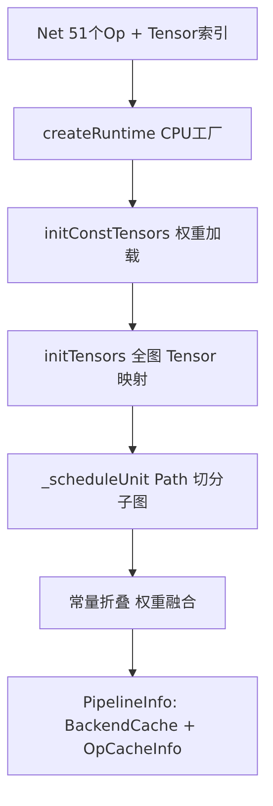
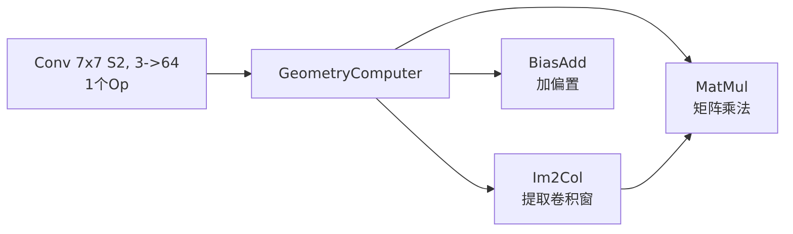
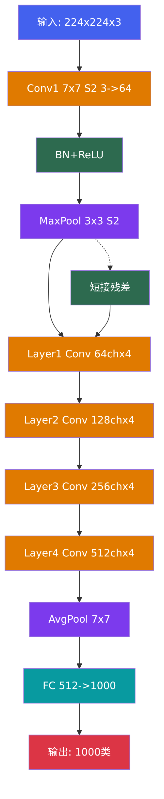
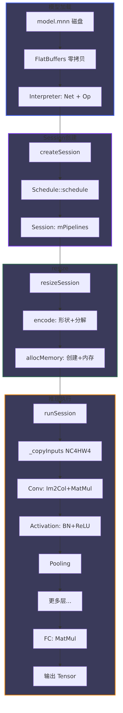

输入: 224 x 224 x 3 RGB 图片 │ ├─ Conv1: 7x7, S=2, P=3, 3->64 -> 输出: 56x56x64 ├─ BN + ReLU + MaxPool 3x3 S=2 -> 输出: 28x28x64 │ ├─ Layer1: [Conv3x3 -> BN -> ReLU] x 2 -> 输出: 28x28x64 (64ch) ├─ Layer2: [Conv3x3 -> BN -> ReLU] x 2 -> 输出: 14x14x128 (128ch) ├─ Layer3: [Conv3x3 -> BN -> ReLU] x 2 -> 输出: 7x7x256 (256ch) ├─ Layer4: [Conv3x3 -> BN -> ReLU] x 2 -> 输出: 7x7x512 (512ch) │ ├─ Average Pool 7x7 -> 输出: 1x1x512 └─ FC 512->1000 -> 输出: 1000 类概率
| 操作 | 输入 | 输出 | ResNet18 数据量 |
|---|---|---|---|
| FileLoader::load | .mnn 文件 | char* buf | ~45 MB (含权重) |
| GetNet(buf) | char* buf | Net* 指针 | 零拷贝, 无内存复制 |
| oplist() | Net* | Op*[] | 51 个算子 |
| tensorName() | Net* | string[] | ~60 个 Tensor |

ID 形状(NC4HW4) 名称 类型 后端 ────────────────────────────────────────────────────────── 0 [1,1,224,224,4] input INPUT CPU 1 [1,16,56,56,4] conv1_output NORMAL CPU ... ... ... ... 50 [1,1,1,1000] fc_output OUTPUT CPU

原始 Op:
OpType = Conv2D, kernel=7, stride=2, pad=3, 3->64
分解为 3 个 Command:
[0] Im2Col:
输入 [1,1,224,224,4] -> turnIm2ColToBlitInfo -> MNNPackC4ForMatMul_A
输出 packed矩阵 (eP=16, lP=196: 7x7x4)
数据搬运: 196 次 NEON ld1/st1/transpose / tile
[1] MatMul:
weight [64x196] x packed [196x16] -> output [64x16]
NEON fmla 指令, 一次 4x4 外积
[2] BiasAdd:
output [64x16] + bias [64]
执行 196 个 tile (56x56/16) 完成全部 Conv1
Conv1 命令组的 useCount 跟踪:
Im2Col(input) -> tmp1 useCount: input=1, tmp1=1
MatMul(tmp1, weight) -> conv_out tmp1=2, conv_out=1
MatMul onResize 后 tmp1=1 (Im2Col 已消费)
BiasAdd(conv_out, bias) -> bn_input conv_out=2, bn_input=1
BiasAdd onResize 后 conv_out=1
所有 Command 完成后: tmp1=0 -> mem=nullptr (回收)
conv_out=0 -> mem=nullptr (回收)
峰值内存 = 最大同时存活 Tensor = Conv1 的 Im2Col/MatMul 中间结果
用户输入 [1,3,224,224]: NC4HW4 [1,1,224,224,4]: R R R ... R G B 0 R G B 0 ... G G G ... 3->4 通道补零 B B B ... copyFromHostTensor 拷贝

阶段 逻辑形状 NC4HW4 形状 内存大小 浮点运算 ──────────────────────────────────────────────────────────────────── Input [1,3,224,224] [1,1,224,224,4] 0.8 MB - Conv1 [1,64,56,56] [1,16,56,56,4] 0.8 MB 118 MF BN+ReLU [1,64,56,56] [1,16,56,56,4] 0.8 MB 0.2 MF MaxPool [1,64,28,28] [1,16,28,28,4] 0.2 MB 0.1 MF Layer1 [1,64,28,28]x4 [1,16,28,28,4] 0.2 MBx4 ~80 MF Layer2 [1,128,14,14]x4 [1,32,14,14,4] 0.1 MBx4 ~180 MF Layer3 [1,256,7,7]x4 [1,64,7,7,4] 0.05 MBx4 ~90 MF Layer4 [1,512,7,7]x4 [1,128,7,7,4] 0.05 MBx4 ~50 MF AvgPool [1,512,1,1] [1,128,1,1,4] 0.002 MB - FC [1,1000] [1,1,1,1000] 0.004 MB 1 MF 总计 - - 峰值~1.2M 1.8 GF

// Conv1 第一个 tile (eP=16 个输出点) Step 1: turnIm2ColToBlitInfo(start=0, xC=16) -> 输出窗 oy=0, ox=0~15 -> 窗大小: 7x7x4 = 196 float/窗 -> srcPtr[0..15] 指向 16 个窗的起始地址 -> el[0..15] 包含: 有效长度, 通道数, 输出偏移 Step 2: MNNPackC4ForMatMul_A -> 加载 16 窗 x 196 float (NC4HW4 格式) -> NEON ld1/trn1/stp: 数据重排为连续矩阵 -> 输出 packed [16 x 196] Step 3: MNNPackedMatMul -> weight [64 x 196] x packed [196 x 16] -> NEON fmla 外积, 分 64/4=16 输出组 -> 输出 [64 x 16] 写入 NC4HW4 Step 4: 下一个 tile ... 共 56x56/16 = 196 个 tile 总 Im2Col 调用: 196 次 总浮点: 196 x 16 x 64 x 196 = 118 MFLOPS